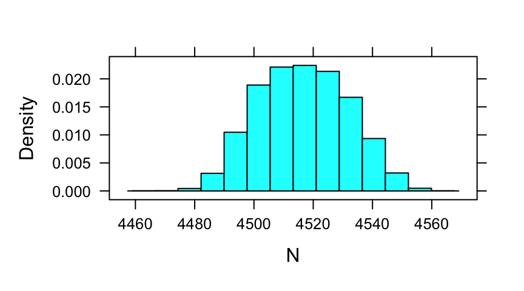
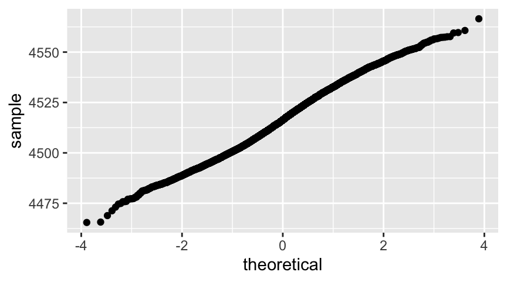
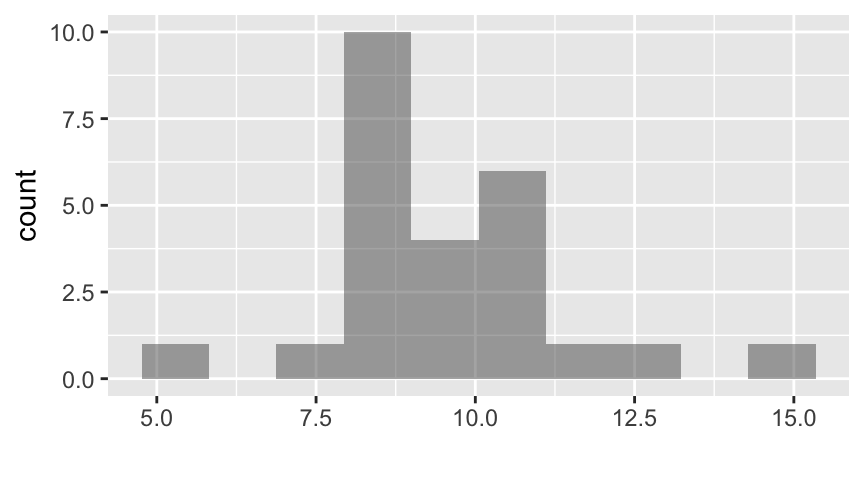
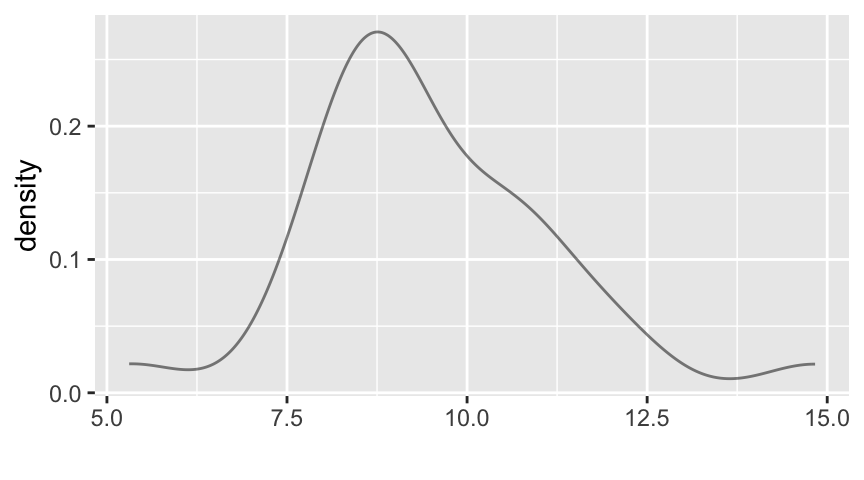
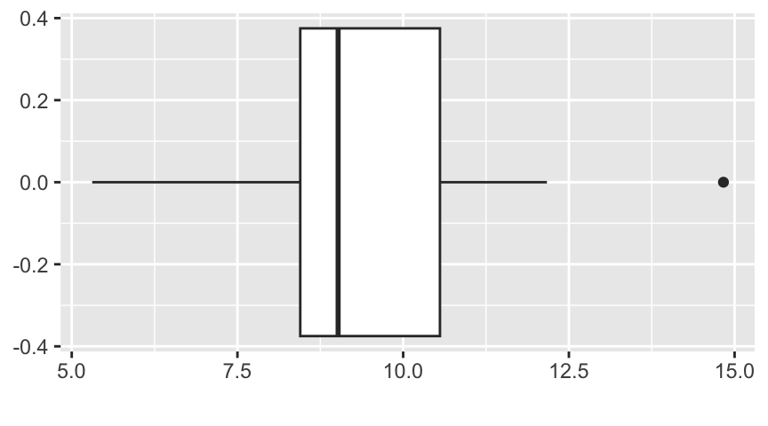

pt(1, df = 29) - pt(-1, df = 29)[1] 0.674418You have probably been told (in physics labs, for example) to report all measurements along with an uncertainty. The reporting often uses the notation:
\[ \mbox{measurement} \pm \mbox{uncertainty} \;. \] But what is uncertainty and how is it calculated? These are topics for this chapter.
Although many people mistakenly conflate the terms error and uncertainty, these are two different, but related concepts.
The word “error” in the context of scientific measurement has a rather different meaning from its use in everyday English. It does not mean blunder or goof (although a blunder or goof could increase the amount of experimental error). Instead, error refers to the unavoidable fact that the measurements scientists record are not exactly correct.
Error is easily defined:
Definition 6.1 \[ \mbox{error} = \mbox{estimate} - \mbox{estimand} \] or, equivalently, \[ \mbox{error} = \mbox{measurement} - \mbox{measurand} \]
That is, error is the difference between the number we have measured or calculated and the number that calculation is attempting to estimate. In most applications, we do not know the error exactly, because we do not know the estimand. This is where uncertainty comes in.
Uncertainty is a numerical measure summarizing how large the error might be. There are several different types, or definitions, or uncertainty. The different definitions of uncertainty have in common that they are all trying to describe a statistical distribution of errors.
Knowing something about this distribution of the errors can tell us how close our estimates tend to be to the estimand.
We will use standard uncertainty unless we say otherwise.
Definition 6.2 Standard uncertainty is the (estimated) standard deviation of the distribution of errors.
You may wonder how we can know the distribution of errors when we cannot know the error. That is a good question, which we will begin to address via an example.
Suppose you want to estimate the number of dimes in a large sack of dimes. Here is one method you could use:
Suppose that the dimes in our our bag together weigh 10.2 kg and the mean weight of our 30 measured dimes is 2.2582333. Then we would estimate the number of dimes to be \[ 10200 / 2.2582333 = 4516.8051722 \;. \] But how good is this estimate? Do we expect to be within a small handful of dimes? Might we be off by 100 or 500? Standard uncertainty provides a way to quantify this. But first, we need to calculate uncertainty for the two ingredients in this recipe: the total weight of all the dimes in the bag (\(\hat B\)), and the mean weight of the 30 measured dimes (\(\hat D\)).
We only measure the bag of dimes once (and might expect that the value observed on the digital read out would be the same if we measured it repeatedly anyway), so the distribution involved in our uncertainty calculation will be based on some assumptions about the workings of our scale. For example, we could model a reading of 10.2 kg with a \(\Unif(10.15, 10.25)\)-distribution.1
This model reflects the assumption that if the actual weight is anywhere between 10.15 and 10.25, the reading will be 10.2 and that the actual weight is equally likely to be anywhere within that range.
If we interpret the 10.2 reading in this way, then the uncertainty can be calculated as the standard deviation of a \(\Unif(10.15, 10.25)\)-distribution:
\[ u_{\hat B} = \frac{b-a}{\sqrt{12}} = \frac{10.25-10.15}{\sqrt{12}} = \frac{0.1}{\sqrt{12}} = 0.0288675 kg = 28.8675135 g \]
The situation for our estimated mean weight of a dime is a little different. We weighed 30 dimes, and calculated the mean mass of one dime from those data. But if we repeated the measurements many times – taking another 30 dimes, calculating the average…taking another 30 dimes, calculating another average…and so on many times…how much variability would there be in the calculated averages? We will learn how to estimate this quantity ourselves soon; for now, we will take it as a given that it is \(\frac{s}{\sqrt{n}}\), where \(s\) is the standard deviation of one sample (the masses of 30 dimes), and \(n\) is the sample size (here, 30). So the uncertainty in our mean dime weight is about:
\[ u_{\hat D} = \frac{s}{\sqrt{n}} = \frac{0.0220699}{\sqrt{30}} = 0.0040294\;. \] So we would report our estimate for the mean weight of a dime as \[ 2.2582333 \pm 0.0040294 \;. \]
This notation looks like a confidence interval, and indeed it is a confidence interval. Since we are using \(t_* = 1\), this is approximately a 68% confidence interval:
pt(1, df = 29) - pt(-1, df = 29)[1] 0.674418Now that we have computed the uncertainties for \(B\) and \(D\), we need to find a way to combine them to determine the uncertainty for \(B/D\). For this we use a linear approximation of the function \(f(B,D) = B/D\).
Recall from calculus that \[ f(x,y) \approx f(a, b) + \frac{\partial f}{\partial x} (x-a) + \frac{\partial f}{\partial y} (y-b) \;, \] where the partial derivatives are evaluated at \((x,y) = (a,b)\).
If we apply this to our estimators \(\hat B\) and \(\hat D\), we get \[ f(\hat B,\hat D) \approx f( B, D ) + \frac{\partial f}{\partial \hat B} (\hat B- B) + \frac{\partial f}{\partial \hat D} (\hat D- D) \;. \]
From this it follows that \[ \begin{aligned} \E(f(\hat B,\hat D)) &\approx \E\left(f( B, D)\right) + \E\left( \frac{\partial f}{\partial {\hat B}} (\hat B- B) \right) + \E\left( \frac{\partial f}{\partial \hat D} (\hat D- D) \right) \\ &\approx f(B,D) + 0 + 0 \\ &= f(B,D) \;. \end{aligned} \]
(The 0’s come because our estimators are approximately unbiased: \(\E(\hat B) \approx B\) and \(\E(\hat D) \approx D\).) This says that \(\hat B/ \hat D\) is a reasonable estimate for \(B/D\) – it is approximately unbiased.2
But we really want an expression for the uncertainty – the variance (which we will turn into a standard deviation). We use similar logic to the expectation calculation above, and we will need to use the finding (not proven here) that for constants \(a\) and \(b\) and random variable \(X\), \(Var(aX+b) = a^2 Var(X)\). Assuming \(\hat B\) and \(\hat D\) are independent,3 a reasonable assumption in this situation, we get
\[ \begin{aligned} \\[5mm] \Var(f(\hat B,\hat D)) &\approx \Var\left(f( B, D)\right) + \Var\left( \frac{\partial f}{\partial \hat B} (\hat B - B) \right) + \Var\left( \frac{\partial f}{\partial \hat D} (\hat D - D) \right) \\ &= 0 + \left(\frac{\partial f}{\partial \hat B}\right)^2 \Var(\hat B) + \left(\frac{\partial f}{\partial \hat D}\right)^2 \Var(\hat D) \end{aligned} \]
where again we evaluate the partial derivatives with \(\hat{B}\) and \(\hat{D}\).
Applying this to \(f(\hat B,\hat D) = \hat B/\hat D\), we get \[ \begin{aligned} \frac{\partial f}{\partial \hat B} &= \frac{1}{\hat D} \\ \frac{\partial f}{\partial \hat D} &= \frac{-\hat B}{\hat D^2} \end{aligned} \] So our uncertainty for the estimated number of dimes (remember, we want the standard deviation, which will be the square root of the variance estimate we just derived) is \[ \sqrt{ \frac{1}{2.2582333^2} \cdot 28.8675135^2 + \left(\frac{1.02\times 10^{4}}{2.2582333^2}\right)^2 \cdot 0.0040294^2} = 15.1117467 \;, \] and we would report our estimated number of dimes as \[ 4517 \pm 15 \; \mbox{dimes} \;. \]
The method described in this example is generally referred to as the Delta Method. Often scientists and engineers who are using this method don’t use the hat notation to distinguish between estimates/estimators and estimands. In the box below, we’ve dropped the hats.
Let \(X\) and \(Y\) be independent estimates with uncertainties \(u_{X}\) and \(u_{Y}\),
and let \(W = f(X,Y)\). Then the uncertainty in the estimate for \(W\) can be estimated as \[
u_{W} \approx
\sqrt{
\left(\frac{\partial f}{\partial X}\right)^2 u_X^2
+
\left(\frac{\partial f}{\partial Y}\right)^2 u_Y^2
}
\] where the partial derivatives are evaluated using estimated values of \(X\) and \(Y\).
The Delta Method can be extended to functions of more (or fewer) than two variables by adding (or removing) terms. Slightly more complicated formulas exist to handle situations where the estimators are not independent (but we will not cover those in this course).
Because this method is based on using a linear approximation to \(f\), it works better when the linear approximation is better. In particular, when \(\frac{\partial^2 f}{\partial X^2}\) or \(\frac{\partial^2 f}{\partial Y^2}\) are large near the estimated values of \(X\) and \(Y\), the approximations might not be very good.
We can also estimate the uncertainty in the estimated number of dimes using simulations.
B <- runif(10000, 10150, 10250)
SampleMeans <- do(10000) * mean( ~ mass, data = resample(Dimes) )
head(SampleMeans ,3)D <- SampleMeans$mean
N <- B / D
histogram( ~ N)
gf_qq( ~ N)
sd(N)[1] 15.06229A few explanatory notes regarding the computation above.
resample() samples from a data frame with replacement. That is, some of the rows may appear more than once, others not at all. Resampling is a common way to estimate a sampling distribution from a single sample. resample() can also be used on a “bare” vector (that is, a vector of data points not contained within a data frame, as exemplified below).resample(1:10) # some items may be chosen more than once [1] 7 8 6 1 10 9 8 9 6 1sample(1:10) # no item may be chosen more than once, so this just shuffles [1] 5 9 4 1 6 3 7 10 2 8shuffle(1:10) # this also shuffles [1] 8 9 2 5 4 1 6 7 10 3do() doesn’t know what to call the result of what it is “doing”, it calls it result. (Sometimes do() can figure out a better name.)When you record the results of a measurement for which there is an a priori estimate of uncertainty, the uncertainty should be recorded along with the measurement itself. Similarly, reports of quantities estimated from data should also include estimated uncertainties.
As a general guideline, a properly reported scientific estimated quantity includes the following five elements:
Example 6.1 If you measured the length of a pendulum using a meter stick, you might report the measurement this way:
Length \(= 0.834 \pm 0.002\) m
Measured with a meter stick from pivot point to the center of the steel weight.
Uncertainty reflects the limited accuracy of measurement with a meter stick.
In plots, the number is given by the scales of the plot, the units are typically included in the axes labels, uncertainties may be represented by “error bars”, and a statement describing the method of measurement or calculation should appear in the plot legend.
Numerical values and their uncertainties should be recorded to the proper number of decimal places. Most software either reports too many significant digits or rounds numbers too much. For correct professional presentation of your data, follow these guidelines:
Note carefully the difference between significant figure and decimal place.
The following examples will help:
Example 6.2 The timer reports a value of 0.3451 seconds. The uncertainty on the measurement is 0.0038 seconds. By Rule 1, the uncertainty should be reported to one significant figure, so we round it to 0.004 seconds. By Rule 2, the measurement must also be rounded to the third decimal place. Thus, the measurement should be reported as \(0.345\pm0.004\) seconds.
Example 6.3 The measured value is \(7.92538 \cdot 10^4\), and its uncertainty is \(2.3872 \cdot 10^2\). By Rule 1, the uncertainty should be rounded to one significant figure, so \(2 \cdot 10^2\). By Rule 2, we report the measurement to the same decimal place as the uncertainty, so \(7.93 \cdot 10^4\). Putting it together, the measurement should be reported as \((7.93\pm0.02) 10^4\).
Example 6.4 The estimated value is \(89.231\), and its uncertainty is \(0.1472\). By Rule 1, the uncertainty should be rounded to two significant figures, so \(0.15\). By Rule 2, we report the estimate to the same decimal place as the uncertainty, so \(89.23 \pm 0.15\).
Multiple similar measurements should be reported in a table. The column headings should clearly and concisely indicate the quantity in each column; the column heading must include the units. Uncertainties should be listed in a separate column, located just to the right of the measurement column. (Sometimes, uncertainties are listed in parentheses after the estimate instead; just make sure the header and legend of the table makes it clear what values are being reported, and where.)
Example 6.5 A lab group calculated these numbers for kinetic energy and its uncertainty:
Kinetic Energy | uncertainty |
0.8682 | 0.059 |
1.0661 | 0.071 |
1.0536 | 0.070 |
1.3881 | 0.058 |
0.8782 | 0.108 |
This should be reported with appropriate rounding as
| Kinetic Energy | uncertainty |
|---|---|
| 0.87 | 0.06 |
| 1.07 | 0.07 |
| 1.05 | 0.07 |
| 1.39 | 0.06 |
| 0.88 | 0.11 |
Q. The side of a square is measured and reported as \(12.3 \pm 0.2\) mm. How should the area be reported?
A. Our estimate for the area is \(12.3^2 = 151.29\). Our transformation is \(f(x) = x^2\), so \(\Partial{f}{x} = f'(x) = 2x\).
Applying the Delta Method, our uncertainty is
\[ \sqrt{ (2 (12.3))^2 (0.2)^2 } = 2 (12.3)(0.2) = 4.92 \] and we report the area as \(151 \pm 5\).
It is worth looking at the relative uncertainty of the linear and area measurements.
\[ \begin{aligned} \frac{0.2}{12.3} &= 0.0162602 \\ \frac{5}{151} &= 0.0325 \end{aligned} \]
So the relative uncertainty of the area measurement is twice the relative uncertainty of the linear measurement.
The preceding example demonstrates a simplified version of the Delta Method formula when we are dealing with only one estimator.
%s{\textsf{\bfseries The Delta Method for one estimator}}Let \(X\) be an estimator with uncertainty \(u_{X}\) and let \(\hat W = f(\hat X)\). Then the uncertainty in the estimate \(W\) can be estimated as
\[ u_{W} \approx \left|\frac{df}{dX}\right| u_X \] where the derivative is evaluated using the estimated value of \(X\), \(\hat{X}\).
Example 6.6 Q. The sides of a rectangle are measured and reported as \(12.3 \pm 0.2\) mm and \(6.3 \pm 0.1\) mm. How should the area be reported?
A. Our estimate for the area is \(12.3 \cdot 6.3 = 77.49\).
Now we need to estimate the uncertainty. Our transformation is \(f(x,y) = xy\), so \(\frac{\partial f}{\partial x} = y\) and \(\frac{\partial f}{\partial y} = x\).
\[ \sqrt{ 6.3^2 \cdot 0.2^2 + 12.3^2 \cdot 0.1^2 } = 1.7608237 \]
and we should report the area as
\[ 77.5 \pm 1.8 \]
Sometimes it is more convenient to think about relative uncertainty:
Definition 6.3 (Relative uncertainty) \[ \mbox{relative uncertainty} = \frac{ \mbox{uncertainty of measurement} }{\mbox{magnitude of measurement}} \] For example, if we measure a mass to be \(10.2\) g with an uncertainty of \(0.3\) g, the relative uncertainty is
\[ \frac{0.3}{10.2} = 0.0294118 = 2.9 % \] Often it is the case that uncertainty grows with the magnitude of the estimate, and relative uncertainty is a way of comparing the uncertainty in large measured values with the uncertainty of small measured values on a more equal basis. Relative uncertainty is also independent of the units used.
In the example above, we get a nice formula if we compute relative uncertainty instead of absolute uncertainty. Let \(P = XY\) where \(X\) and \(Y\) have uncertainties \(u_X\) and \(u_Y\). Then \(\Partial{P}{X} = Y\) and \(\Partial{P}{Y} = X\), so
\[ \begin{aligned} \frac{u_P}{P} & = \sqrt{ \frac{ Y^2 u_X^2 + X^2 u_Y^2}{P^2} } \\ & = \sqrt{ \frac{ Y^2 u_X^2 + X^2 u_Y^2}{X^2Y^2} } \\ & = \sqrt{ \frac{ u_X^2}{X^2} + \frac{u_Y^2}{Y^2} } \\ & = \sqrt{ \left(\frac{ u_X}{X}\right)^2 + \left(\frac{u_Y}{Y}\right)^2 } \end{aligned} \] which gives a Pythagorean identity for the relative uncertainties.
The computations are the same for any product.
So this Pythagorean identity for relative uncertainties can be applied to estimate uncertainties for quantities such as area (length \(\times\) width), work (force \(\times\) distance), distance (velocity \(\times\) time), etc.
Example 6.7 Q. Use relative uncertainty to estimate the area of the rectangle in Example 6.6.
A. The relative uncertainties in the length and width are \[ \frac{0.2}{12.3} = 0.0162602 \ \tand \ \frac{0.1}{6.3} = 0.015873 \;. \] So the relative uncertainty in the area estimation is \[ \sqrt{ (0.0162602)^2 + (0.015873)^2 } = 0.0227232 \;. \] Now we solve \[ \frac{u_A}{77.49} = 0.0227232 \] to get \[ u_A = (77.49) (0.0227232) = 1.7608237 \;. \] Notice that this matches the result from Example 6.6.
Example 6.8 Q. When two resistors with resistances \(R_1\) and \(R_2\) are connected in parallel, the combined resistance satisfies \[ R = \frac{R_1 R_2}{R_1 + R_2} \] Suppose the resistances of the two resistors are reported as \(20 \pm 0.7\) ohms and \(50 \pm 1.2\) ohms. How should you report the combined resistance?
A. Our estimate is \(\hat R = \frac{ 20 \cdot 50}{ 20 + 50} = 14.2857143\). To estimate the uncertainty, we need the partial derivatives \(\Partial{R}{R_1}\) and \(\partial{R}{R_2}\).
\[ \begin{aligned} \Partial{R}{R_1} &= \frac{ (R_1+R_2)R_2 - (R_1 R_2) }{(R_1 + R_2)^2} \\ &= \left( \frac{ R_2}{R_1 + R_2}\right)^2 \\ &= \left( \frac{ 50}{20 + 50}\right)^2 = 0.5102041 \end{aligned} \] Similarly, \[ \begin{aligned} \Partial{R}{R_2} &= \left( \frac{ R_1}{R_1 + R_2}\right)^2 \\ &= \left( \frac{ 20}{20 + 50}\right)^2 = 0.0816327 \end{aligned} \]
So our estimated uncertainty is given by \[ u_R = \sqrt{ (0.5102041)^2 (0.7)^2 + (0.0816327)^2)(1.2^2) } = 0.3703337 \;. \] So we report the combined resistance as
\[ 14.3 \pm 0.4 \]
There are many reasons for experimental error, and it is important to identify potential causes for experimental error, to reduce their effects when possible, and to handle them appropriately in any case.
Even if measurements are taken by carefully trained scientists using highly precise instruments, repeated measurements of the “same thing” may not always give the same value.
All data collection is done in the context of variability, and statistics allows us to interpret our data in this context.
One reason that a measurement may change is that what we are measuring may be changing. Some quantities depend on environmental factors (like temperature and atmospheric pressure, for example) that may change between measurements. This sort of variability can often be reduced by attempting to control factors that might lead to such variability. For example, a delicate experiment might be conducted in a climate controlled chamber. Another solution is to use a model that includes additional variables for these quantities. Often a combination of these two approaches is used.
If measurements are made using similar (but not identical) objects, then differences among those objects may lead to variability in measurements. If measurements are made on a sample of living things, the variability from one individual to the next could be quite large. But even in the physical sciences, each run of an experiment may require the use of different ``consumables” that have slightly different properties that affect our measurements.
Another source of error is the measuring process itself. Every measuring device has its limits, as do the humans who are using them. If you repeatedly timed how long it takes for a steel ball to fall from a fixed height, it is quite likely that you would not get exactly the same result each time. The amount of variability would likely increase if several different students were each asked to measure the time as different students might employ slightly different methods, or be more or less skillful in their measuring.
The variability from one measurement to another that would exist even if there were no moving target effect is called measurement error. In practice, it can be difficult or impossible to isolate the moving target effect from measurement error, so they may be combined into one source of variability which we will call random error. In physics, the moving target effect is often small – at least in carefully designed experiments – so that random error is dominated by the difficulties of measuring the quantity under study. In other disciplines, the relative magnitudes may be reversed.
The best way to estimate the effects of random error is by making repeated measurements and comparing them. The discrepancies (differences between measurements) provide an indication of the amount of random error.
Sometimes additional information can also be used to help us estimate random error. This can be especially important when our ability to take repeated measurements is limited or when limitations of our measurement apparatus make it impossible to directly observe the effects of random error.
Although there is no theoretical limit to the precision of a numerical quantity like mass, time, velocity, etc., every measurement device has limited precision. Because of this lack of precision in our measurement device, it may well be that repeated measuremets will all look identical.
But this does not mean that they are exactly correct.
For example, if we measure temperature using a digital thermometer that has a display showing tenths of a degree C, then any temperature between 57.15 and 57.25 will be displayed as 57.2. Any variability within that range will be invisible to our thermometer. Similarly, if we meaure with a ruler with a 1/8 inch scale, we can use interpolation to get not only to the nearest 1/8 inch, but likely to the nearest 1/16 inch or (with some practice) perhaps to the nearest 1/32 inch. But beyond that, we really cannot tell. If more precise measurements are required, a different measuring tool will need to be used.
If other sources of variability are small, this kind of measurement error may completely mask them.
Even if your target were not moving, and even if there were no variability in measurements from time to time, and even if our measurement apparatus were perfectly precise, there is still a chance that a measurement might not give the value we are searching for because the procedure used might tend to give results that over- or under-estimate the quantity being measured. This kind of error may be referred to as either bias or systematic error.
Definition 6.4 Bias or Systematic error refers to the tendency to either over- or under-estimate a quantity. It is a tendency to “be off in a particular direction”.
Perhaps the easiest type of systematic error to understand is calibration error. If a measuring device is not properly calibrated, the resulting measurements may be too large or too small. For example, if a timing device uses an internal clock that runs a bit slow, it will tend to underestimate times. It might be possible to correct for this bias by performing calibration exercises comparing this timing device to another (more accurate) device. If several similar timing devices systematically disagree, but there is no reference to calibrate with, then we have evidence that at least some of the devices are introducing systematic error, but we may not know which ones or how much.
Calibrating equipment and procedures by using them to measure or compute standard quantities is an important part of quality scientific experimentation because it helps reduce the effects of systematic bias.
Poorly designed experiments can also introduce systematic error. For example, imagine an experiment where a steel ball is dropped from a platform at different heights and the time is recorded until the ball hits the ground.
To save time, the researchers set the platform at a specified height and drop the ball multiple times before moving the platform to a new height and repeating. Using this method, any error in measuring the height of the platform will affect all the drops from that height in the same way. This introduces an unknown amount of systematic error into the measurements taken at each height. An alternative design in which the heights are done in random order and in which the platform height is reset before each drop would likely have somewhat more random error but would avoid this source of systematic error.
Systematic error is generally more difficult to handle than random error in part because there is often no good way to measure how large systematic error might be or even to detect that it is occurring.
We have identified several potential sources of error.
It is good to get in the habit of qualitatively determining which sources you expect to contribute relatively larger and smaller amounts of error. Often we can ignore the sources of relatively smaller potential error and focus our attention on the sources of relatively larger potential error.
In Section 6.4 we did several examples of propagation of uncertainty. But uncertainty cannot be propagated to derived estimates unless we already have estimated uncertainties for the components of the derivation. Where do these uncertainty estimates come from?
As we have mentioned before, it is not possible to measure error directly.
If we knew the amount of an error exactly, we would correct for it and obtain the exact, correct estimate of the value we were trying to measure.
Since we do not know the error exactly, we have to try to use our data (and our prior knowledge about the situation) to try to estimate it. In this section we focus our attention on this part of the uncertainty calculation.
If you have repeated measurements, a histogram, boxplot, or density plot of these measurements can provide a visual representations that shows both what is “typical” or “average” and how much variability there is in the data.



In addition, graphical displays of your data may help isolate outliers – values that don’t seem to fit the pattern of the rest of the data. Outliers should not be removed from your data without furhter investigation. You need to know why these values are different from the rest. Was there a mistake in the measurement? Was the value recorded incorrectly (decimal point in the wrong place, wrong units, transposed digits, typo)? Or was there something different going on – so that the potential outlier is really an important, informative data point that is trying to tell you something about the process you are measuring? An outlier might be the key observation in your data set – don’t throw it away without investigating.
Whenever possible, you should make multiple measurements of the same phenomenon. The variability among these measurements allows us to estimate the uncertainty. If we are using the mean of multiple measurements as our estimate, then the uncertainty is the “standard error of the mean” (which we will derive in the following chapter):
\[ SE = \frac{s}{\sqrt{n}} \] This is how we estimated the uncertainty in our estimate for the mean weight of a dime.
In other more complicated study designs, some other standard error formula may be used.
Estimating uncertainty from data is only possible if
Frequently, these conditions are not met, but we still want to quantify the uncertainty.
There are many measuring devises that provide limited precision so that the best we may be able to say is that we know the measured value to be in some interval \([a,b]\). This would be the case for measuring devices with digital displays, for example.
Imagine a device that displays 8.03 on its digital display.
Presumably, this means that the actual measurement can lie anywhere between 8.025 and 8.035. This value has been rounded for digital display, and we have no way of knowing where within that interval the value might be.
We don’t want to report the uncertainty as \(b-a\) or even \((b-a)/2\). These would be overestimates of the “average” amount of error. Here, we aren’t looking for an upper bound on the potential error; we want to estimate something like the average amount of error.
In this case we can estiamte a standard uncertainty based on the uniform distribution.
Recall, a uniform distribution is one in which every value in some interval is “equally likely”. A uniform distribution has standard deviation \(s = \frac{b-a}{\sqrt{12}}\), so we will use this as our estimate for standard uncertainty as well. Notice that \(\frac{2}{\sqrt{12}} = \frac{1}{\sqrt{3}} = 0.5773503\). This means that adding and subtracting one standard uncertainty from the center of the interval \[
\frac{a+b}{2} \pm \frac{b-a}{\sqrt{12}}
\] will cover about 58% of the interval. This is quite a bit less than the 68% covered by the central portion of a normal distribution (within 1 standard deviation of the mean). For a “back of the envelope” computation, to use an uncertainty with a similar amount of “coverage” to the “coverage” that the standard deviation has for the normal distribution, we might choose to use the approximation \(\frac{b-a}{\sqrt{12}} \approx \frac{b-a}{3}\), since this will slightly over-estimate the uncertainty and lead to a central covering probability of \(2/3 \approx 68\)%.
This same idea can be used when working with analog scales, but in this case, we typically can see that the value is closer to one end than the other or closer to the center than to the edges. This reduces our uncertainty by a factor of 2. For example, given a ruler marked in mm, if we can tell than a reading is closer to 12.3 mm than it is to 12.4 mm, then we are saying we know the value is in the interval \([12.3, 12.35]\), which is only half as wide as the scale of the ruler. We can then use a uniform distribution as above, except that the limits \(a\) and \(b\) of the distribution are a bit narrower now.
(On some analog scales, it may be possible to do even better than this.)
Example 6.9 Measuring length on a ruler with a 1 mm scale, we could use \(\frac{1/2}{\sqrt{12}}\) as the estimated uncertainty of the measurement if the primary source of error is reading the scale. Of course, it may be that lining up the scale with the object being measured introduces more uncertainty than reading the scale does. That may lead us to choose a larger value for our estimated uncertainty.
Other distributions, most notably the triangle and normal distributions, are sometimes used instead of the uniform distribution to model errors in measurements made with various devices. Each of these models produces a somewhat smaller estimate for the uncertainty than you would get using a uniform distribution. In the case of the normal distribution, typically one considers half the width of the interval to be spanned by 3 standard deviations of the normal distribution (since that would capture 99.7% of the distribution. If \(a\) and \(b\) are the lower and upper limits of plausible values corresponding to a measurement, the three uncertainty calculations are as follows:
| distribution | uncertainty |
|---|---|
| uniform | \(\displaystyle \frac{b-a}{2 \sqrt{3}}\) |
| triangle | \(\displaystyle \frac{b-a}{2 \sqrt{6}}\) |
| normal | \(\displaystyle \frac{b-a}{2 \cdot 3}\) |
This makes the uniform distribution the most conservative and the normal distribution the least conservative.
Sometimes previous experience with a device or protocol may provide us with a good estimate for the uncertainty even before we collect our data. In such cases, we can use these a priori uncertainties both in planning and in analysis, but it is also good to check that the data collected are consistent with the estimated uncertainties.
Exercise 6.1 A clinical trial with 30 patients has been performed in which the volume of distribution (the theoretical volume that would be necessary to contain the total amount of an administered drug at the same concentration that it is observed in the blood plasma) of a new anti-diabetes drug was measured for each patient. The sample mean was 10.2 L with a standard deviation of 1.9 L.
# 95 <!-- CI -->
t.star <- qt(.975, df = 29); t.star[1] 2.04523ME <- t.star * 1.9 / sqrt(30); ME[1] 0.70947171.2 + c(-1,1) * ME[1] 0.4905283 1.9094717# 99 <!-- CI -->
t.star <- qt(.995, df = 29); t.star[1] 2.756386ME <- t.star * 1.9 / sqrt(30); ME[1] 0.956165310.2 + c(-1,1) * ME[1] 9.243835 11.156165# standard uncertainty = SE = s / sqrt(n)
1.9 / sqrt(30)[1] 0.346891Exercise 6.2 A handbook gives the value of the coefficient of linear thermal expansion of pure copper at 20 degrees C, \(\alpha_{20}\)(Cu), as \(16.52 \times 10^{-6} \ {}^\circ C^{-1}\) and simply states that “the error in this value should not exceed \(0.40 \times 10^{-6} \ {}^{\circ} C^{-1}\).”
# rectangualr: sd = width / sqrt(12) = width / (2 * sqrt(3))
0.4 * 2 / sqrt(12)[1] 0.23094010.4 / sqrt(3)[1] 0.2309401# triangular: sd = width / (2 * sqrt(6))
0.4 * 2 / (2 * sqrt(6))[1] 0.16329930.4 / sqrt(6)[1] 0.1632993The uniform distribution is a more conservative assumption. The trianlge distribution should only be used in situations where errors are more likely to be smaller than larger (with the the specified bounds).
Exercise 6.3 The following data are given in in the certificate of a standard solution: C(HCl) = (\(0.10000 \pm 0.00010\)) mol/l. No additional information is given on the type of the uncertainty. (The \(\pm\) part here is not the uncertainty but is supposed to indicate upper and lower bounds on the error.)
# rectangular
0.0001 / sqrt(3)[1] 5.773503e-05# trianglular
0.0001 / sqrt(6)[1] 4.082483e-05Exercise 6.4 The area of a circle is to be calculated from a measured radius. The measurement and its standard uncertainty are reported as \[ 12.5 \pm 0.3 \mbox{m} \;. \] What should the researchers report as the area?
Solution. Let \(f(R) = \pi R^2\). Then \(\Partial{f}{R} = 2\pi R\), so the uncertainty in the area estimation is \[ \sqrt{ (2 \pi R)^2 (0.3)^2 } = 2 \pi R \cdot 0.3 = 23.5619449 \mathrm{m}^2 \;. \] We can report the area as \(490 \pm 20\).
Exercise 6.5
Below are some computer-computed estimates and uncertainties. They are far too precise (there are way too
many digits reported). Use standard practice to report each estimate with the correct number of digits.| estimate | uncertainty |
|---|---|
| 5.43210 | 0.024135 |
| 1535.68 | 12.7342 |
| 576.3415 | 3.453567 |
| 0.00148932 | 0.0000278 |
Solution.
| estimate | uncertainty |
|---|---|
| 5.43 | 0.02 |
| 1536 | 13 |
| 576 | 3 |
| 0.00149 | 0.00003 |
Exercise 6.6
A student is calculating the volume of a rectangular tank by measuring
the length, width, and height. These measurements are recorded as
$L = 2.65 \pm 0.02$cm, $W = 3.10 \pm 0.02$cm, and $H = 4.61\pm 0.05$ cm.
How should the volume be reported?Solution.
In a product the relative uncertainties add, soL <- 2.65; W <- 3.10; H <- 4.61
uL <- 0.02; uW <- 0.02; uH <- 0.05
V <- L * W * H; V[1] 37.87115uV <- sqrt( (uL/L)^2 + (uW/W)^2 + (uH/H)^2) * V; uV[1] 0.5568714So we report $37.9 \pm 0.6$Exercise 6.7 Estimate (with uncertainty) the amount of gasoline burned by personal cars in a particular year in the US from the following estimates and uncertainties for that year:
<!-- note: estimates found online for 2011. uncertainties made -->
<!-- up but roughly based on the number of digits reported in online sources. -->| quantity | estimate | uncertainty |
|---|---|---|
| cars per person | 0.80 | 0.12 |
| population (millions of people) | 311.6 | .2 |
| fleet fuel efficiency (mpg) | 23.7 | 1.7 |
| average distance driven per vehicle (miles) | 12,000 | 2,000 |
Note: Various estimates for these quantities are available online, but most do not report uncertainty. The uncertainties here reflect the number of significant figures used to report these numbers and the variability between estimates found at different web sites. Also, the methodology for determining these values is not always clear. So treat this as an exercise in propagation of error, but understand that better estimates of fuel consumption (and uncertainty) would be possible with better data.
Solution. The total fuel consumed is given by \[ F = \frac{kPd}{E} \] where \(k\) is the cars per person, \(P\) is total population, \(d\) is average distance driven per car, and \(E\) is the average efficiency.
\[ \begin{aligned} \Partial{F}{k} &= \frac{Pd}{E} \\ \Partial{F}{P} &= \frac{kd}{E} \\ \Partial{F}{d} &= \frac{kP}{E} \\ \Partial{F}{E} &= \frac{-kPd}{E^2} \end{aligned} \]
So the estimated amount of fuel consumed (in millions of gallons) is \[ \frac{kPd}{E} = \frac{0.8 \cdot 311.6 \cdot 12000 }{23.7} = 1.2621772\times 10^{5} \] and the uncertainty can be computed as follows:
k <- 0.8; u_k <- 0.12
P <- 311.6; u_P <- 0.2
d <- 12000; u_d <- 2000
E <- 23.7; u_E <- 1.7
variances <- c(
(P*d/E)^2 * u_k^2 ,
(k*d/E)^2 * u_P^2 ,
(k*P/E)^2 * u_d^2 ,
(k * P * d/E^2)^2 * u_E^2
)
variances[1] 3.584455e+08 6.563051e+03 4.425254e+08 8.196753e+07u_F <-
sqrt(
(P*d/E)^2 * u_k^2 +
(k*d/E)^2 * u_P^2 +
(k*P/E)^2 * u_d^2 +
(k * P * d/E^2)^2 * u_E^2
)
u_F[1] 29714.39sqrt(sum(variances))[1] 29714.39So we might report fuel consumption as 1.3^{5} \(\pm\) 3^{4} millions of gallons or 130 \(\pm\) 30 billions of gallons.
Note: This problem can also be done in stages. First we estimate the number of (millions of) cars using \[ C = k P \;. \]
C <- k * P; C[1] 249.28u_C <- sqrt( P^2 * u_k^2 + k^2 * u_P^2); u_C[1] 37.39234The number of (millions of) miles driven is estimated by \(M = C d\):
M <- C * d; M[1] 2991360u_M <- sqrt( d^2 * u_C^2 + C^2 * u_d^2); u_M[1] 670746.6Finally, the fuel used is \(F = M / E\).
F = M / E
u_F = sqrt( (1/E)^2 * u_M^2 + (M/E^2)^2 * u_E^2); u_F[1] 29714.39This gives the same result (again in millions of gallons of gasoline).
It would also be possible to relative uncertainty to do this problem, since we have nice formulas for the relative uncertainty in products and quotients.
Exercise 6.8 A physics student is calculating the speed of a falling object by measuring the time it takes for the object to move between two timing sensors. If she records the time as \(0.43 \pm 0.02\) seconds and the distance as \(1.637 \pm 0.006\) m, how should she report the speed in \(m/s\)?
Solution.
See the next problem for the answer.Exercise 6.9
Solution.
Let $Q = X Y^{-1}$. So
$\Partial{Q}{X} = Y^{-1}$ and
$\Partial{Q}{Y} = -X Y^{-2}$. From this we get\[ \begin{aligned} \frac{u_Q}{Q} & = \sqrt{ \frac{ Y^{-2} u_X^2 + X^2 Y^{-4} u_Y^2}{Q^2} } \\ & = \sqrt{ \frac{ Y^{-2} u_X^2 + X^2 Y^{-4} u_Y^2}{X^2Y^{-2}} } \\ & = \sqrt{ \frac{ u_X^2}{X^2} + \frac{u_Y^2}{Y^2} } \\ & = \sqrt{ \left(\frac{ u_X}{X}\right)^2 + \left(\frac{u_Y}{Y}\right)^2 } \end{aligned} \]
which gives a Pythagorean identity for the relative uncertainties just as it did for a product.
V <- 1.637 / 0.43; V[1] 3.806977uV <- sqrt( (0.02/.43)^2 + (0.006/1.637)^2 ) * V; uV[1] 0.1776176So we report \(3.81 \pm 0.18\).
Other models are possible, and the choice of model matters for the uncertainty calculation that will result.↩︎
There is a small sleight of hand here. Technically, we should evaluate the partial derivatives at the unknown values \(B\) and \(D\). We will instead plug in our particular estimates (from our data) for \(\hat B\) and \(\hat D\). To denote all of this completely rigorously, we would need to have separate notation for \(\hat B\) considered as a random variable (that has an expected value and variance) and as a number (the value computed from our particular data). We’re avoiding this extra layer of notation.↩︎
A more general formula can approximate the propagation of uncertainty in cases where \(\hat B\) and \(\hat D\) cannot be assumed to be independent.↩︎